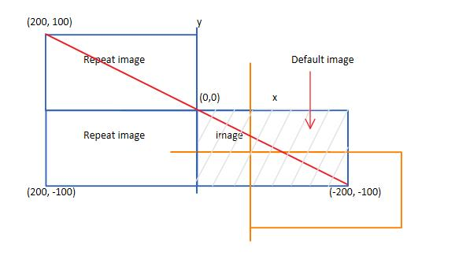

CSS background position
css background-position 属性主要还是根据左上角的顶点为(0, 0);
向右、下为负数，左、上为正数；
碰到repeat，可用正数，如为no-repeat，只能用负数
repeat px (760px, 270px)
repeat percentage (52%, 46%)
repeat -px (-370px, -253px)
no repeat px (0, 0)
no repeat percentage (52%, 46%)
no repeat -px (-370px, -253px)